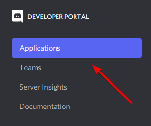
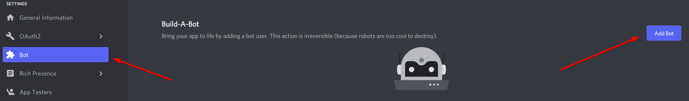
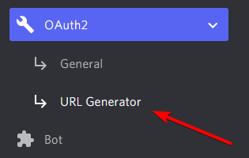
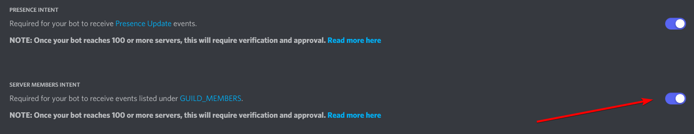
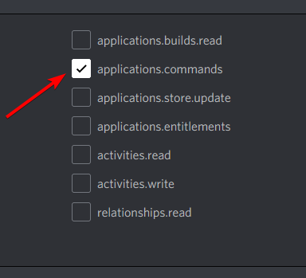

Introduction
The wirlybird manual will cover the most important topics related to using whirlybird to power a Discord bot.
Continue reading to get into the realm of whirlybird!
Setting Up a Discord Application
You must create a Discord application before you can use whirlybird. To get started, visit the Discord Developer Portal.
If you are on the Discord homepage, scroll to the bottom and click "Developers" listed under "Resources."

Once you are there, click "Applications."

Click "New Application." It will prompt you to input a name for your application.
Click "Bot" and then click "Add Bot." It will open another prompt asking if you want your application to become a bot. Confirm by clicking "Yes, do it!"

Next, head over to the "OAuth2" section and click "URL Generator." It will allow you to invite your application into a server.

Enable the bot scope. You can also optionally enable the
application.commands scope if you need application commands (such as slash
commands). That will be for a later topic in this manual. If you're interested,
continue reading!

At the bottom will be your generated URL. When you visit the URL, it will prompt an application invitation. Select the desired server you wish to add your application, and then click "Authorize."
Congratulations! You've successfully set up your Discord application! It will appear as offline as no program is currently running the bot. Continue reading to learn how whirlybird can get your bot online.
Installing Deno
whirlybird relies on the Deno runtime. To install Deno,
see the Deno manual to
find the installation instructions for your operating system. The minimum
required version of Deno to run whirlybird is 1.17.0.
Installing whirlybird
Installing whirlybird into your program is as simple as importing the core modules directly into your code. To clarify the README, whirlybird is not a module itself but a collection of modules. There is no central import location. Instead, you must import each of the modules individually.
See the Deno manual to learn how to manage dependencies.
core/gateway
and core/http are
generally recommended for most end-users. These two modules expose the main
functionality of most bots.
In your deps.ts file:
export * from "https://github.com/apacheli/whirlybird/raw/dev/core/gateway/mod.ts";
export * from "https://github.com/apacheli/whirlybird/raw/dev/core/http/mod.ts";
In your main.ts file:
import { GatewayClient, HttpClient } from "./deps.ts";
GatewayClient and HttpClient is what you're most likely to use in your
program. However, you're free to import any additional whirlybird modules as
long as it suites your needs. You can skip ahead to the
Core Modules section of this manual to see the available
exports.
Ping-Pong!
For this ping-pong example, you need to import 3 of the core modules:
core/gateway,
core/http, and
core/types.
In your deps.ts file:
export * from "https://github.com/apacheli/whirlybird/raw/dev/core/gateway/mod.ts";
export * from "https://github.com/apacheli/whirlybird/raw/dev/core/http/mod.ts";
export * from "https://github.com/apacheli/whirlybird/raw/dev/core/types/mod.ts";
In your main.ts file:
import {
CacheClient,
GatewayClient,
GatewayEvents,
GatewayIntents,
type HandleEvent,
HttpClient,
} from "./deps.ts";
const token = "Bot <TOKEN>";
const cache = new CacheClient();
const http = new HttpClient(token);
const handleEvent: HandleEvent = async (payload) => {
cache.update(payload);
switch (payload.t) {
case GatewayEvents.MessageCreate: {
if (payload.d.content === "!ping") {
await http.createMessage(payload.d.channel_id, {
content: "pong!",
});
}
break;
}
}
};
const gateway = new GatewayClient(token, {
handleEvent,
intents: GatewayIntents.GuildMessages,
ready: () => console.log("Hello, World!"),
url: "wss://gateway.discord.gg?v=9",
});
await gateway.connect();
An explanation for what is going on here:
const token = "Bot <TOKEN>";
Replace <TOKEN> with your bot's token. To get your bot's token, you can visit
the Discord Developer Portal.

While it is unrecommended to hard-code your bot's token into your program, we will do it here for demonstration purposes. You can also skip to Using Environment Variables to see how you should store tokens more safely.
The handleEvent function will run whenever a shard receives an incoming event
from the Discord gateway. At the top of the function, the cache will
automatically update based on the gateway event. In the next part of this code
snippet, whenever a message gets sent that says !ping, your bot will reply
with pong!.
const handleEvent: HandleEvent = async (payload) => {
cache.update(payload);
switch (payload.t) {
case GatewayEvents.MessageCreate: {
if (payload.d.content === "!ping") {
await http.createMessage(payload.d.channel_id, {
content: "pong!",
});
}
break;
}
}
};
This part of the code creates our access to the Discord gateway. Whenever all shards are ready, "Hello, World!" will be logged into your console. For something as minimal as this, the only intent you will need to enable is guild messages.
const gateway = new GatewayClient(token, {
handleEvent,
intents: GatewayIntents.GuildMessages,
ready: () => console.log("Hello, World!"),
url: "wss://gateway.discord.gg?v=9",
});

Finally, the last snippet will connect us to the Discord gateway.
await gateway.connect();
Installing a Source-Code Editor
Here are some source-code editor recommendations:
There are many more source-code editors out there waiting to be your favorite. You can also just use the default text editor on your operating system if you wish. Additionally, you can read up on the Deno manual for more details.
Using the Deno Formatter and Linter
Deno provides built-in tools such as a formatter and linter. You can access them by typing into the CLI.
$ deno fmt
$ deno lint
JavaScript Versus TypeScript
You can use whichever of the two languages that you prefer. You can also use them both simultaneously. You can even use JavaScript even though whirlybird is written in TypeScript.
For more information, see the Deno manual.
My take: TypeScript is not perfect, but it is one hell of a good bandage for JavaScript.
Join/Leave Messages
To know if someone has joined your server, you need to connect to the Discord gateway. Additionally, you will also need to enable the "server members intent" for you application.
Visit the Discord Developer Portal to find your application, and then click "Bot." You may or may not have to scroll down to find the toggle.

To connect to the gateway, you must use
core/gateway.
In your deps.ts file:
export * from "https://github.com/apacheli/whirlybird/raw/dev/core/gateway/mod.ts";
You will receive two events: GUILD_MEMBER_ADD and GUILD_MEMBER_REMOVE. In
your handleEvent function, create a case for both of these events:
const handleEvent: HandleEvent = (payload) => {
switch (payload.t) {
case GatewayEvents.GuildMemberAdd: {
// ...
break;
}
case GatewayEvents.GuildMembeRemove: {
// ...
break;
}
case GatewayEvents.MessageCreate: {
// ...
break;
}
}
};
To send a message, you can use
core/http.
In your deps.ts file:
export * from "https://github.com/apacheli/whirlybird/raw/dev/core/gateway/mod.ts";
export * from "https://raw.githubusercontent.com/apacheli/whirlybird/dev/core/http/mod.ts";
Next, specify the ID of the channel you want to send join/leave messages to.
Replace <CHANNEL_ID> with your desired channel's ID.
const channelId = "<CHANNEL_ID>";
In each of the cases, create a message to the specified channel:
case GatewayEvents.GuildMemberAdd: {
const member = payload.d;
await http.createMessage(channelId, {
content: `Welcome, ${member.user.username}.`,
});
break;
}
case GatewayEvents.GuildMembeRemove: {
const member = payload.d;
await http.createMessage(channelId, {
content: `Goodbye, ${member.user.username}.`,
});
break;
}
When connecting to the gateway, you must include the GUILD_MEMBERS intent to
receive these events.
const gateway = new GatewayClient(token, {
handleEvent,
intents: GatewayIntents.GuildMessages | GatewayIntents.GuildMembers,
url: "wss://gateway.discord.gg?v=9",
});
Congratulations! Your bot should now send a message whenever someone joins or leaves your server!
Using Environment Variables
The recommended way of storing your bot's token is by using environment variables. You should not hard code your bot's token directly into your program.
BOT_TOKEN=""
Optionally, you can use another third party module to automatically load the environment variables for you.
In your main.ts file:
const token = `Bot ${Deno.env.get("BOT_TOKEN")}`;
You must enable --allow-env to use environment variables.
$ BOT_TOKEN="" deno run --allow-env --allow-net main.ts
You can also use prompt if you forget to set an environment variable when
running your program from the CLI.
let token = Deno.env.get("BOT_TOKEN") ?? prompt("bot token:");
if (!token) {
throw new Error("Missing token");
}
token = `Bot ${token}`;
See the Deno manual for additional details.
Interactions
You must enable the application.commands scope for you bot if you want to use
your bot's application commands. If you don't need application commands, you can
skip this step. However for this tutorial, we will use an application command.
Note: Interactions are not limited to just application commands. For example, message components such as buttons and select menus also fall under this category.

Using core/http
and helpers from
core/interactions
to create a global application command:
import {
chatInputCommand,
HttpClient,
integerOption,
stringOption,
} from "./deps.ts";
const http = new HttpClient(BOT_TOKEN);
const command = chatInputCommand("ping", "ping pong command", {
/* options */
});
await http.createGlobalApplicationCommand(APPLICATION_ID, command);
You can receive interactions either from the Discord gateway or from an HTTP server.
If you're using the Discord gateway, you will receive a gateway event named
INTERACTION_CREATE. In your handleEvent function, you must make a case for
the INTERACTION_CREATE event.
const handleEvent: HandleEvent = (payload) => {
switch (payload.t) {
case GatewayEvents.InteractionCreate: {
// ...
break;
}
case GatewayEvents.MessageCreate: {
// ...
break;
}
}
};
You can use
core/http to
respond to an interaction:
case GatewayEvents.InteractionCreate: {
const interaction = payload.d;
if (interaction.data?.name === "ping") {
await http.createInteractionResponse(interaction.id, interaction.token, {
data: {
content: "pong",
},
type: InteractionCallbackType.ChannelMessageWithSource,
});
}
break;
}
If you are running an HTTP server, you need your application's public key. To get your application's public key, you can visit the Discord Developer Portal.

You can import
core/interactions
into your program.
In your deps.ts file:
export * from "https://github.com/apacheli/whirlybird/raw/dev/core/interactions/mod.ts";
It will provide a function named handleRequestEvent. This function will
automatically verify incoming requests for you.
import {
type Handler,
handleRequestEvent,
InteractionCallbackType,
} from "./deps.ts";
const publicKey = Deno.env.get("PUBLIC_KEY") ?? prompt("public key:");
if (!publicKey) {
throw new Error("Missing public key");
}
const handler: Handler = async (callback, interaction) => {
if (interaction.data?.name === "ping") {
await callback(InteractionCallbackType.ChannelMessageWithSource, {
content: "pong",
});
}
};
const serve = async (conn: Deno.Conn) => {
for await (const event of Deno.serveHttp(conn)) {
handleRequestEvent(publicKey, event, handler);
}
};
for await (const conn of Deno.listen({ port: 1337 })) {
serve(conn);
}
It is mandatory to respond to an interaction. Otherwise, it will "fail." For unwanted interactions, you can reply with an ephemeral message notifying the user:
import { InteractionCallbackDataFlags } from "https://github.com/apacheli/whirlybird/raw/dev/core/types/mod.ts";
await callback(InteractionCallbackType.ChannelMessageWithSource, {
content: "Do not do that!",
flags: InteractionCallbackDataFlags.Ephemeral,
});

Congratulations! Your bot should now respond to your /ping command!
History of whirlybird
whirlybird first saw development in January of 2019. At that time, it was named "Harmony" and was using the Node.js environment. Later, the project would rename into "Space" and use the Deno environment. Today the project is now known as "whirlybird."
I want to thank @gspalato for starting this journey with me.
Core Modules
These core modules provide most of the functionality for a Discord bot application to run.
core/cache
TODO
core/gateway
This module allows your Discord application to connect to the Discord gateway and receive incoming events in real-time.
core/http
This module allows your Discord application to make HTTP requests to Discord.
whirlybird will automatically handle rate limits in an attempt to minimize
429s.
core/interactions
This module provides tools to help verify incoming requests to your HTTP server. It also provides tools such as an application command builder and a message component builder.
core/oauth2
TODO
core/rpc
TODO
core/types
This module exposes TypeScript types that mirror the Discord Developer Documentation.
core/util
This module provides utilities for the rest of the core modules to consume. You can also use them in your project as well.
core/voice
TODO
Built-In Logging
whirlybird automatically logs events to the terminal by default. If you wish to
use the logger, you can import it from
core/util.
In your deps.ts file:
export * from "https://github.com/apacheli/whirlybird/raw/dev/core/util/mod.ts";
Logger levels:
debug: A general message about an operation.error: An error has occurred, but the program can still operate.fatal: A fatal error has occurred, and the program should probably exit.info: A general message about an operation that executed successfully.trace: A message about an operation at the finest details.warn: Something unintentional may have happened. It can usually be ignored.
whirlybird also provides ANSI colors. Some operating systems or source-code editors may not support every color. However, this should mostly benefit your use cases.
In your main.ts file:
import {
ansi,
logger,
} from "https://github.com/apacheli/whirlybird/raw/dev/core/util/mod.ts";
logger.info(ansi.yellow("Woah, this message is yellow!"));
You can also use the ansi export for Discord messages. You must use a code
block. This is a relatively new feature, so it may not show up correctly across
all clients.
await http.createMessage(channelId, {
content: `\`\`\`ansi\n${ansi.green("i am groot")}\n\`\`\``,
});